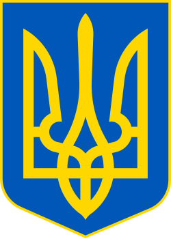
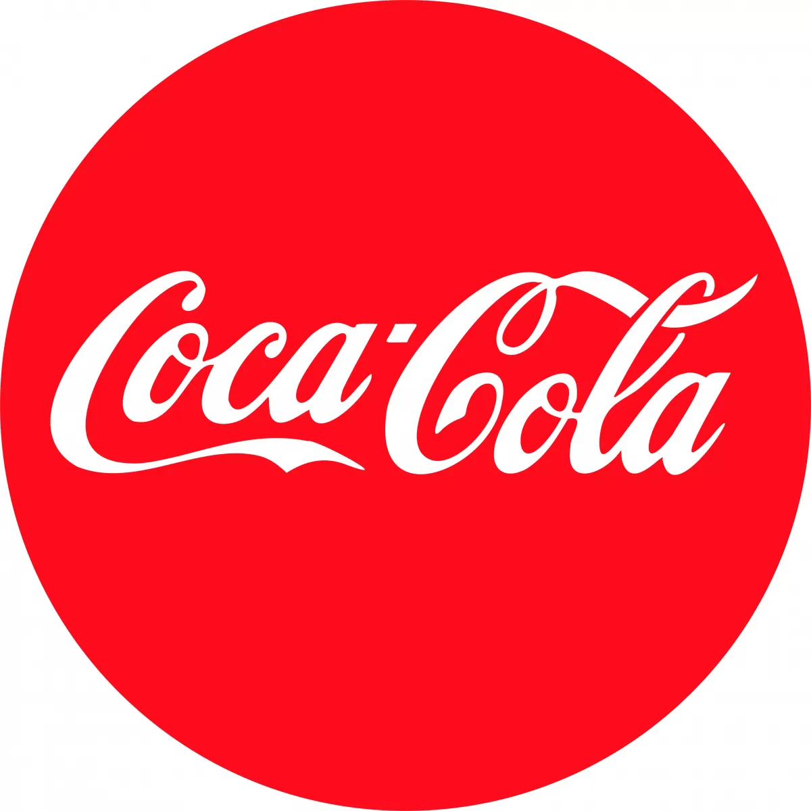
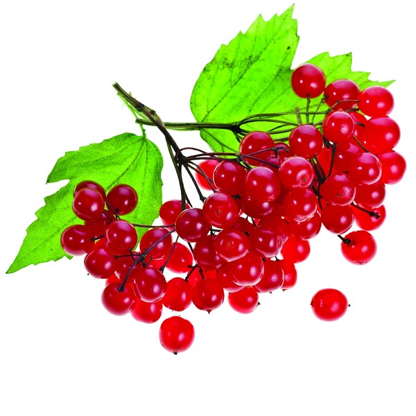
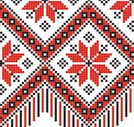
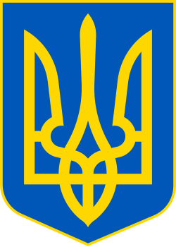
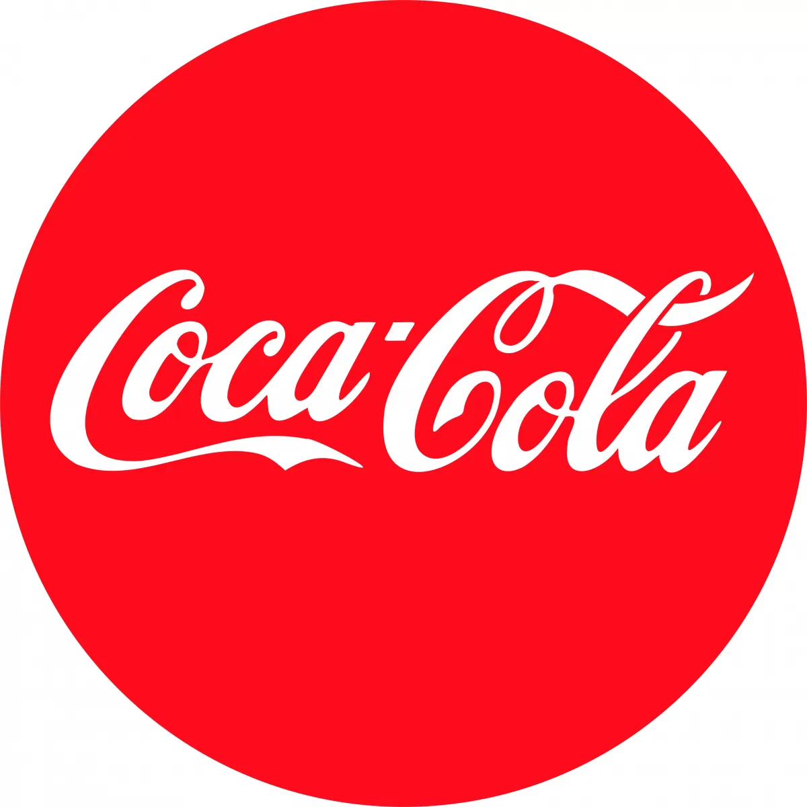
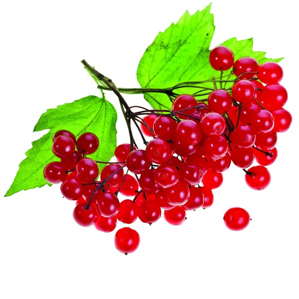
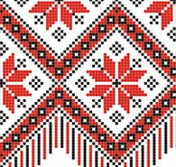
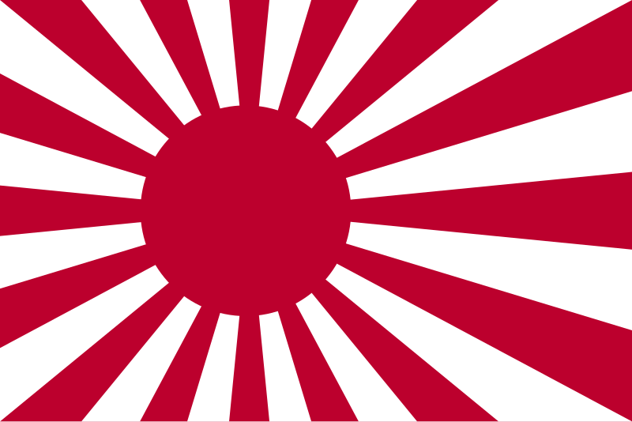
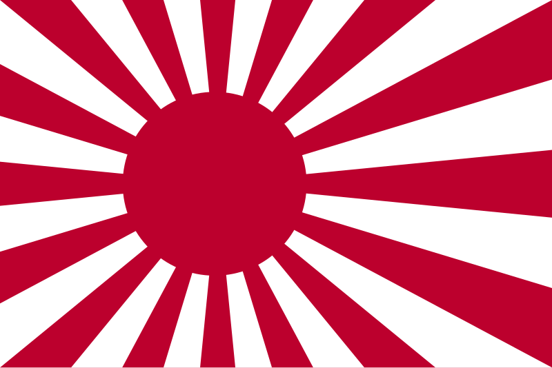

Україна в серці – сила в єдності
Кольори прапора. Український прапор справді складається з двох рівних смуг: синьої зверху та жовтої знизу.
Символіка кольорів. Дуже давно, ще за часів Київської Русі, ці кольори вже були важливими. Синій (або блакитний) справді часто асоціювався з ясним небом, річками та миром. Жовтий (або золотий) — з сонцем, пшеничними полями та достатком. Ця символіка народжувалася з самої природи України та життя нашого народу.
Історичність. Синьо-жовтий стяг був прапором Української Народної Республіки ще у 1917-1921 роках, а після проголошення незалежності у 1991 році він знову став офіційним державним прапором України.
Історія двох братів: Неба і Пшениці
Колись давно, коли наші пра-пра-прадідусі були ще малими хлопчиками, а їхні пра-пра-прабабусі плели довгі коси, на великій і прекрасній землі, що звалася Україною, уже живла одна чарівна історія. Історія двох братів, які ніколи не сварилися і допомагали один одному.
Першого брата звали НЕБО
Він був величезний, добрий і сильний. Він носив найкрасивішу блакитну сорочку, яку тільки можна уявити. Іноді вона була ясно-блакитною, як озеро влітку. Іноді глибоко-синьою, як море ввечері. Він обіймав всю землю і дарував їй дощ, що напував рослини, і сонячне проміння, ще все оживало. Люди, подивившись на нього, відразу відчували спокій, мир і надію, що все буде добре.
Другого брата звали ПШЕНИЦЯ
Він був не таким високим, як брат, але дуже теплим і щедрим. Він носив яскраво-жовтий кожушок, схожий на мільйони сонячних зайчиків. Він жив у полі, сміявся від легкого вітерця і годував всіх людей золотими зернятками, з яких робили дуже смачний хліб. Подивишся на нього — і на душі стає тепло, здається, що саме до тебе в серце заглянуло маленьке сонечко.
І от одного разу вирішили брати піти у велику подорож, щоб допомогти людям. Але як же їм не розлучатися?
Тоді мудра стара Земля дала їм пораду: «Станьте разом, об'єднайте свою силу, і всі побачать, яка краса народжується з миру та злагоди!»
Небо спустилося згори, а Пшеница піднялася знизу. І вони зустрілися...
Так з'явився прапор. Синій колір зверху — це брат Небо, що оберігає нас. Жовтий колір знизу — це брат Пшениця, що годує нас.
Цей прапор став оберігом для всіх українців. Він розвівався над лицарськими замками козаків, що захищали рідну землю. Його вишивали на сорочках мами та бабусі, вкладаючи в кожну ниточку свою любов. Він завжди нагадував: коли ми разом, коли ми дружні й щирі, як ці два кольори, нас ніхто не подолає!
Інші країни, побачивши таку красу, навіть стали називати Україну «житницею» (це означає «кормилиця», як наш брат Пшениця) під безкраїм «блакитним небом» (як наш брат Небо).
Сьогодні, коли ти бачиш, як на щоглі, на будівлі чи в руках у мами чи тата майорить жовто-блакитний прапор, пам'ятай: Це не просто тканина. Це — два брати, що обіймають нашу Батьківщину. Небо, яке захищає, і Пшениця, яка годує. Це символ миру, сили і єдності всіх українців, великих і малих.
Тож коли наступного разу побачиш наш прапор, посміхнися і знай: це два найкращі друзі дивляться на тебе з любов'ю.
Пропоную всім вигадати власну історію створення українського прапора.
Пазл нашої держави
Перетягни тільки символи України на карту.
 







 

Символи України
Прапор
Синє небо та жовта пшениця — символ миру й достатку.
Герб (Тризуб)
Стародавній знак Рюриковичів — символ державності та волі.
Калина
Образ життя, роду та незламності в українській культурі.
Вишиванка
Оберіг і код нації у візерунках.
На комп’ютері ця частина — інтерактивна гра з перетягуванням символів на карту 🇺🇦
Прапор моєї мрії
Обери колір і створи власний прапор України!